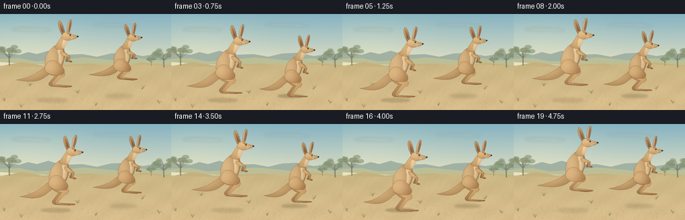
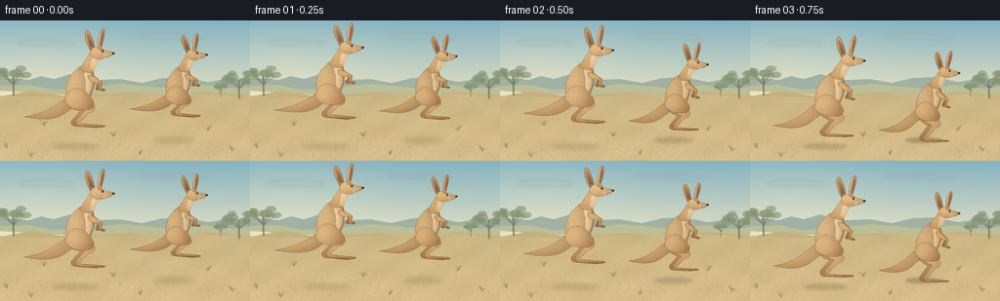

CODING AGENTS AS PIXEL WORLD MODELS
traex/GPT-6.1-Sol · instance_preservation_0008
点击播放 · 原生 RGB 像素
逐轮保存的候选
回放视频、检查图与代码变化。
每份候选均可单独播放。实际图片检查记录在下方工具轨迹中。
候选 01播放与检查图
点击播放 · 原生 RGB 像素


展开代码变化
--- 上一保存版本
+++ 本次保存版本
@@ -0,0 +1,230 @@
+from pathlib import Path
+import json, math
+import numpy as np
+from PIL import Image, ImageDraw, ImageFilter
+import artifact_io
+
+ROOT = Path(__file__).resolve().parent
+SPEC = json.loads((ROOT / 'task_spec.json').read_text())
+W, H, S = SPEC['width'], SPEC['height'], 4
+WW, HH = W*S, H*S
+
+# Cubic outlines are drawn at four times the output resolution.
+def path(commands):
+ pts=[]; p=None
+ for c in commands:
+ if c[0]=='M': p=np.array(c[1:], float); pts.append(tuple(p))
+ elif c[0]=='L': p=np.array(c[1:], float); pts.append(tuple(p))
+ elif c[0]=='C':
+ a=p.copy(); b=np.array(c[1:3]); d=np.array(c[3:5]); e=np.array(c[5:7])
+ n=max(10,int((np.linalg.norm(b-a)+np.linalg.norm(d-b)+np.linalg.norm(e-d))*1.4))
+ for t in np.linspace(0,1,n)[1:]:
+ q=(1-t)**3*a+3*(1-t)**2*t*b+3*(1-t)*t*t*d+t**3*e
+ pts.append(tuple(q))
+ p=e
+ return pts
+
+
+def backdrop():
+ yy,xx=np.mgrid[0:HH,0:WW]; y=yy/S; x=xx/S
+ a=np.minimum(y/78,1)[...,None]
+ arr=np.array([133,179,194])*(1-a)+np.array([229,225,195])*a
+ glow=np.exp(-((x-38)/88)**2-((y-37)/47)**2)[...,None]
+ arr+=glow*np.array([15,9,2])
+ image=Image.fromarray(np.uint8(np.clip(arr,0,255)),'RGB')
+ cloud=Image.new('RGBA',(WW,HH)); d=ImageDraw.Draw(cloud)
+ for cx,cy,rx,ry,op in [(40,23,23,2.0,45),(61,24,15,2,35),(167,16,28,2,28),(195,18,13,1.6,25)]:
+ d.ellipse(((cx-rx)*S,(cy-ry)*S,(cx+rx)*S,(cy+ry)*S),fill=(249,239,209,op))
+ cloud=cloud.filter(ImageFilter.GaussianBlur(2*S)); image.paste(cloud,(0,0),cloud)
+ d=ImageDraw.Draw(image)
+ def poly(p,col):d.polygon([(a*S,b*S) for a,b in p],fill=col)
+ poly([(0,68),(0,60),(16,59),(29,61),(42,57),(55,60),(72,55),(82,58),(98,61),(123,60),(145,64),(166,59),(188,58),(213,63),(238,59),(256,61),(256,86)],(161,177,163))
+ poly([(0,72),(0,67),(29,66),(54,71),(86,69),(124,65),(159,68),(179,70),(208,66),(242,70),(256,68),(256,88)],(188,190,150))
+ poly([(0,82),(0,78),(32,72),(64,77),(99,76),(135,74),(176,79),(211,73),(256,77),(256,144),(0,144)],(197,177,126))
+ # Lightly textured sand and dry pasture, with a sloping distant horizon.
+ ground=np.asarray(image).copy().astype(float)
+ rng=np.random.default_rng(31)
+ noise=rng.normal(0,1.05,(HH,WW))
+ broad=(2*np.sin(x*.11+y*.19)+1.4*np.sin(x*.039-y*.17)+.6*np.sin(x*.53+y*.32))
+ v=np.clip((y-78)/66,0,1)
+ terrain=np.stack([204+13*v,183+7*v,132+8*v],-1)
+ terrain+=(broad+noise)[...,None]
+ horizon=77+2*np.sin(x/38)
+ select=y>horizon
+ ground[select]=terrain[select]
+ image=Image.fromarray(np.uint8(np.clip(ground,0,255)))
+ d=ImageDraw.Draw(image,'RGBA')
+ # Distant eucalyptus silhouettes sit at the edges, behind the subjects.
+ def tree(cx,base,size,seed):
+ rr=np.random.default_rng(seed)
+ trunk=(116,122,94,190)
+ d.line([(cx*S,base*S),((cx-.5)*S,(base-size*.7)*S)],fill=trunk,width=max(1,int(size*.075*S)))
+ for j in range(9):
+ angle=rr.uniform(-1.2,1.2); ex=cx+math.sin(angle)*size*.50; ey=base-size*rr.uniform(.65,1.0)
+ d.line([(cx*S,(base-size*.38)*S),(ex*S,ey*S)],fill=trunk,width=max(1,int(size*.026*S)))
+ rx=size*rr.uniform(.16,.27); ry=rx*.58
+ d.ellipse(((ex-rx)*S,(ey-ry)*S,(ex+rx)*S,(ey+ry)*S),fill=(132+int(rr.integers(-6,7)),146,113,150))
+ tree(14,77,28,3); tree(245,80,27,5); tree(226,78,13,8)
+ # Distant blades fade with distance, foreground tufts have longer blades.
+ for k in range(1000):
+ x0=rrx=rng.uniform(0,256); y0=rng.uniform(78,144)
+ f=(y0-76)/68; length=rng.uniform(.6,2.7)*(f+.2)
+ c=(int(rng.uniform(143,188)),int(rng.uniform(135,163)),int(rng.uniform(86,108)),int(65+95*f))
+ d.line([(x0*S,y0*S),((x0+rng.uniform(-1.2,1.2)*f)*S,(y0-length)*S)],fill=c,width=max(1,int(.22*S)))
+ for cx,cy in [(7,131),(32,140),(143,138),(238,134),(213,113),(45,108),(116,119)]:
+ for j in range(11):
+ dx=rng.uniform(-4,4); ht=rng.uniform(2,6)
+ d.line([(cx*S,cy*S),((cx+dx*.4)*S,(cy-ht*.55)*S),((cx+dx)*S,(cy-ht)*S)],fill=(144,139,87,150),width=2)
+ return image
+
+BACKGROUND=backdrop()
+
+class Kangaroo:
+ def __init__(self,img,x,y,scale,angle,tone=0):
+ self.img=img; self.x=x; self.y=y; self.scale=scale; self.angle=angle; self.tone=tone
+ self.co=math.cos(angle);self.si=math.sin(angle)
+ def tr(self,p):
+ x,y=p; y+=38
+ return ((self.x+self.scale*(x*self.co-y*self.si))*S,(self.y+self.scale*(x*self.si+y*self.co-38))*S)
+ def line(self,commands,color,width=.35):
+ p=path(commands); d=ImageDraw.Draw(self.img)
+ d.line([self.tr(q) for q in p],fill=color,width=max(1,round(width*self.scale*S)),joint='curve')
+ def shape(self,commands,light=(224,189,137),dark=(149,105,65),center=None,radii=None,edge=True,fur=0,seed=0):
+ p=path(commands); pp=[self.tr(q) for q in p]
+ xa=max(0,int(min(q[0] for q in pp))-3);xb=min(WW,int(max(q[0] for q in pp))+4)
+ ya=max(0,int(min(q[1] for q in pp))-3);yb=min(HH,int(max(q[1] for q in pp))+4)
+ if xa>=xb or ya>=yb:return
+ mask=Image.new('L',(xb-xa,yb-ya));md=ImageDraw.Draw(mask)
+ md.polygon([(x-xa,y-ya) for x,y in pp],fill=255)
+ yy,xx=np.mgrid[ya:yb,xa:xb]; dx=(xx/S-self.x)/self.scale;dy=(yy/S-self.y)/self.scale+38
+ lx=dx*self.co+dy*self.si;ly=-dx*self.si+dy*self.co-38
+ if center is None:
+ center=((min(q[0] for q in p)+max(q[0] for q in p))/2-2,(min(q[1] for q in p)+max(q[1] for q in p))/2-3)
+ if radii is None:radii=(max(3,(max(q[0] for q in p)-min(q[0] for q in p))*.60),max(3,(max(q[1] for q in p)-min(q[1] for q in p))*.62))
+ nx=(lx-center[0])/radii[0];ny=(ly-center[1])/radii[1]
+ lighting=np.clip(.24+.67*np.exp(-.75*nx*nx-.60*ny*ny)-.14*nx-.10*ny,0,1)
+ # The coat grain is anchored to anatomy, not to the camera.
+ texture=.75*np.sin(lx*13.4+ly*3.1)+.55*np.sin(lx*4.7-ly*15.8)+.30*np.cos(ly*8.1+lx*9.5)
+ light=np.array(light,dtype=float)-self.tone;dark=np.array(dark,dtype=float)-self.tone
+ col=dark[None,None,:]+(light-dark)[None,None,:]*lighting[...,None]+texture[...,None]
+ rgb=Image.fromarray(np.uint8(np.clip(col,0,255)))
+ self.img.paste(rgb,(xa,ya),mask)
+ if edge:
+ outline=tuple(int(q) for q in dark*.86)
+ ImageDraw.Draw(self.img).line(pp+[pp[0]],fill=outline,width=max(1,round(.24*self.scale*S)),joint='curve')
+ if fur:
+ layer=Image.new('RGBA',(xb-xa,yb-ya));d=ImageDraw.Draw(layer);rng=np.random.default_rng(seed)
+ for _ in range(fur):
+ fx=rng.uniform(min(q[0] for q in p),max(q[0] for q in p));fy=rng.uniform(min(q[1] for q in p),max(q[1] for q in p))
+ pa=self.tr((fx,fy));pb=self.tr((fx+rng.uniform(-.3,.3),fy+rng.uniform(.5,1.2)))
+ color=(252,221,175,36) if rng.random()<.6 else (96,64,39,25)
+ d.line([(pa[0]-xa,pa[1]-ya),(pb[0]-xa,pb[1]-ya)],fill=color,width=1)
+ alpha=np.asarray(layer.getchannel('A')).astype(float)*np.asarray(mask)/255
+ layer.putalpha(Image.fromarray(np.uint8(alpha)))
+ self.img.paste(layer,(xa,ya),layer)
+
+ def ellipse(self,cx,cy,rx,ry,**kw):
+ k=.5522848
+ self.shape([('M',cx-rx,cy),('C',cx-rx,cy-k*ry,cx-k*rx,cy-ry,cx,cy-ry),('C',cx+k*rx,cy-ry,cx+rx,cy-k*ry,cx+rx,cy),('C',cx+rx,cy+k*ry,cx+k*rx,cy+ry,cx,cy+ry),('C',cx-k*rx,cy+ry,cx-rx,cy+k*ry,cx-rx,cy)],**kw)
+ def draw(self,tuck,stretch):
+ # A powerful, thick-based tail always remains attached to the haunch.
+ ty=-15-10*tuck
+ self.shape([('M',-9,-41),('C',-24,-31,-34,ty-2,-58,ty),('C',-46,ty+3,-28,ty+8,-14,-23),('C',-7,-26,0,-34,-9,-41)],light=(219,181,125),dark=(142,103,65),fur=65,seed=12)
+ # The legs on the far side are slightly darker and offset for depth.
+ ky=-20-7*tuck; ay=-3-12*tuck-2*stretch; toe_y=ay+2+3*tuck
+ for far in [True,False]:
+ if not far:break
+ self.leg(ky,ay,toe_y,-4.8,True)
+ # Far forearm; small and bent, unlike the large jumping legs.
+ self.shape([('M',9,-59),('C',13,-56,18,-52-3*tuck,20,-48-3*tuck),('L',17,-42-4*tuck),('C',18,-40-4*tuck,21,-40-4*tuck,22,-42-4*tuck),('L',24,-48-3*tuck),('C',22,-55,14,-61,9,-59)],light=(184,143,98),dark=(133,93,57))
+ # Narrow shoulders flow into a wide pear-shaped lower body.
+ self.shape([('M',-10,-31),('C',-17,-40,-13,-56,-3,-64),('C',2,-69,5,-70,10,-68),('C',18,-66,18,-55,16,-48),('C',14,-40,8,-29,1,-27),('C',-3,-26,-7,-27,-10,-31)],center=(-3,-49),radii=(15,25),fur=240,seed=4)
+ # Pale belly and chest are softly shaded rather than a flat patch.
+ self.shape([('M',10,-66),('C',15,-63,16,-55,14,-47),('C',12,-42,8,-37,6,-34),('C',7,-43,8,-50,8,-55),('C',6,-60,7,-64,10,-66)],light=(236,209,165),dark=(184,145,96),edge=False)
+ # Neck rises forward into the small, alert head.
+ self.shape([('M',2,-66),('C',7,-72,12,-79,17,-85),('L',25,-82),('C',23,-75,20,-70,17,-63),('C',14,-60,7,-62,2,-66)],light=(223,184,127),dark=(153,108,65),center=(13,-76),radii=(11,18),fur=65,seed=7)
+ self.shape([('M',18,-79),('C',21,-78,23,-77,25,-77),('C',22,-72,19,-67,17,-63),('L',13,-65),('C',14,-70,15,-75,18,-79)],light=(239,211,170),dark=(191,149,99),edge=False)
+ self.leg(ky,ay,toe_y,0,False)
+ # Large rounded haunch, the unmistakable spring of a kangaroo.
+ self.shape([('M',-11,-42),('C',-5,-51,7,-46,12,-36),('C',18,-28,13,-23,6,-24),('C',0,-24,-9,-25,-13,-31),('C',-16,-35,-14,-39,-11,-42)],light=(225,187,133),dark=(151,104,62),center=(-5,-37),radii=(17,15),fur=160,seed=23)
+ self.line([('M',3,-42),('C',11,-37,13,-31,8,-27)],(166-self.tone,119-self.tone,75-self.tone),.30)
+ # Near arm folds towards the chest in flight.
+ ey=-50-3*tuck;wy=-42-5*tuck
+ self.shape([('M',12,-59),('C',17,-58,21,ey-2,24,ey),('C',25,ey+1,25,ey+3,24,ey+4),('L',23,wy),('L',27,wy+2),('C',28,wy+3,25,wy+4,23,wy+3),('C',20,wy+2,20,wy,21,wy-3),('L',21,ey+2),('C',17,ey,14,-51,11,-55),('C',10,-57,10,-59,12,-59)],light=(224,181,120),dark=(139,93,54),fur=25,seed=33)
+ for j in range(3):self.line([('M',24+j*.6,wy+1.4),('L',26+j*.5,wy+2.5)],(109,77,47),.25)
+ # The rear and front ears are independent, long and finely tapered.
+ self.shape([('M',15,-84),('C',11,-92,9,-101,12,-105),('C',15,-107,18,-97,19,-91),('L',20,-84)],light=(204,163,108),dark=(127,88,54),fur=25,seed=6)
+ self.shape([('M',15,-88),('C',13,-94,12,-100,13,-102),('C',16,-98,17,-92,17,-88)],light=(174,129,93),dark=(122,86,65),edge=False)
+ # Brow and long narrow muzzle; the face points in the hopping direction.
+ self.shape([('M',15,-83),('C',17,-89,25,-89,29,-84),('C',32,-82,37,-82,39,-80),('C',39,-78,35,-77,31,-77),('C',26,-73,20,-75,17,-77),('C',15,-79,14,-81,15,-83)],light=(233,194,139),dark=(160,116,73),center=(23,-84),radii=(17,9),fur=65,seed=2)
+ self.shape([('M',23,-85),('C',22,-93,25,-103,29,-106),('C',33,-106,30,-95,27,-89),('L',26,-84)],light=(228,190,137),dark=(145,98,62),fur=24,seed=10)
+ self.shape([('M',25,-88),('C',25,-96,28,-102,29,-103),('C',30,-99,28,-92,27,-88)],light=(188,142,105),dark=(117,82,63),edge=False)
+ self.shape([('M',29,-79),('C',33,-79,37,-80,38,-79),('C',36,-76,32,-75,27,-76),('C',25,-76,27,-78,29,-79)],light=(237,210,167),dark=(181,143,96),edge=False)
+ # Eye, nose, mouth and tiny specular highlights survive downsampling.
+ self.ellipse(27.2,-82.7,1.1,1.05,light=(53,42,29),dark=(25,24,20),edge=False)
+ self.ellipse(26.9,-83.05,.30,.30,light=(253,245,220),dark=(239,223,191),edge=False)
+ self.line([('M',25.5,-84.3),('C',26.6,-85,28,-84.7,28.8,-83.8)],(147,104,64),.38)
+ self.ellipse(38.25,-79.7,1.35,1.0,light=(91,75,52),dark=(50,43,33),edge=False)
+ self.line([('M',37.9,-78.5),('C',34.6,-78,32.6,-77.6,31.2,-78)],(111,78,48),.31)
+ self.line([('M',32,-77.8),('L',31.3,-76.9)],(138,97,60),.23)
+ def leg(self,ky,ay,ty,off,far):
+ l=(192,151,100) if far else (217,177,121); d=(120,82,48) if far else (145,97,56)
+ self.shape([('M',-3+off,-35),('C',4+off,-38,12+off,ky-7,15+off,ky-2),('C',16+off,ky+1,12+off,ky+5,9+off,ky+4),('L',-1+off,ay-1),('C',-2+off,ay,1+off,ay+1,3+off,ay+1),('L',23+off,ty),('C',26+off,ty+1,24+off,ty+2,20+off,ty+2),('L',-1+off,ay+3),('C',-5+off,ay+2,-6+off,ay,-5+off,ay-3),('L',5+off,ky+1),('C',0+off,ky,-6+off,-27,-7+off,-30),('C',-9+off,-33,-6+off,-35,-3+off,-35)],light=l,dark=d,fur=70,seed=44 if far else 45)
+ self.line([('M',2+off,ay+1),('C',9+off,ty+.5,17+off,ty+1,23+off,ty+1)],tuple(int(v*.88) for v in d),.35)
+ self.line([('M',21+off,ty),('L',22+off,ty+1.3)],tuple(d),.3)
+
+
+def hopping(phase):
+ phase%=1
+ if phase<.77:
+ u=phase/.77
+ height=18*(4*u*(1-u))
+ tuck=math.sin(math.pi*u)**1.1
+ # Feet reach for the ground on the descending half of the hop.
+ tuck*=1-.28*max(0,(u-.58)/.42)
+ stretch=max(0,(u-.7)/.3)
+ else:
+ u=(phase-.77)/.23
+ height=-1.6*math.sin(math.pi*u)
+ tuck=0;stretch=0
+ return height,tuck,stretch
+
+
+def shadow(image,x,y,scale,height):
+ layer=Image.new('RGBA',(WW,HH));d=ImageDraw.Draw(layer)
+ r=(18+height*.13)*scale
+ alpha=int(72-height*1.9)
+ d.ellipse(((x-r-7)*S,(y-2.7*scale)*S,(x+r)*S,(y+3.0*scale)*S),fill=(98,78,48,max(20,alpha)))
+ layer=layer.filter(ImageFilter.GaussianBlur((1.1+height*.06)*S))
+ image.paste(layer,(0,0),layer)
+
+frames=[]
+for i in range(SPEC['frames']):
+ t=i/SPEC['fps']; image=BACKGROUND.copy()
+ animals=[]
+ # Same two individuals remain visible and distinct for the entire take.
+ for j,(bx,gy,sc,shift) in enumerate([(80,129,1.0,.18),(181,123,.87,.33)]):
+ ph=t/1.46+shift
+ height,tuck,stretch=hopping(ph)
+ x=bx+11*t/4.75+1.2*math.sin(2*math.pi*ph)
+ y=gy-height*sc
+ angle=-.025-.075*tuck
+ animals.append((x,y,sc,angle,height,tuck,stretch,j,gy,ph))
+ shadow(image,x,gy,sc,height)
+ # Subtle kicked-up sand on contact, not persistent opaque clouds.
+ dust=Image.new('RGBA',(WW,HH));dd=ImageDraw.Draw(dust)
+ for x,y,sc,angle,height,tuck,stretch,j,gy,ph in animals:
+ p=ph%1
+ if p>.74:
+ fade=math.sin(math.pi*(p-.74)/.26)
+ for k in range(4):
+ cx=x-6-k*4;cy=gy-1-k*.5;r=(1.7+k*.25)*sc
+ dd.ellipse(((cx-r)*S,(cy-r*.5)*S,(cx+r)*S,(cy+r*.5)*S),fill=(229,209,167,int(35*fade)))
+ dust=dust.filter(ImageFilter.GaussianBlur(S*.7));image.paste(dust,(0,0),dust)
+ # Rear kangaroo first: no limb or body ever merges with the other animal.
+ for x,y,sc,angle,height,tuck,stretch,j,gy,ph in reversed(animals):
+ Kangaroo(image,x,y,sc,angle,tone=5 if j else 0).draw(tuck,stretch)
+ frame=image.resize((W,H),Image.Resampling.LANCZOS)
+ frames.append(np.asarray(frame,dtype=np.uint8))
+artifact_io.save(np.stack(frames),ROOT)
+print('Saved',len(frames),'RGB frames at',W,'x',H,'and',SPEC['fps'],'fps')
可观测工具轨迹
实际执行的命令与返回图片。
命令 1exit 0
/bin/bash -lc "ls -la && cat prompt.txt && printf '\\n---RULES---\\n' && cat GENERATION_RULES.md && printf '\\n---SPEC---\\n' && cat task_spec.json"
命令 2exit 0
/bin/bash -lc "cat artifact_io.py && printf '\\n---PLAYER---\\n' && cat player_template.html"
命令 3exit 0
/bin/bash -lc "cat > generate.py <<'PY'
from pathlib import Path
import json, math
import numpy as np
from PIL import Image, ImageDraw, ImageFilter
import artifact_io
ROOT = Path(__file__).resolve().parent
SPEC = json.loads((ROOT / 'task_spec.json').read_text())
W, H, S = SPEC['width'], SPEC['height'], 4
WW, HH = W*S, H*S
# Cubic outlines are drawn at four times the output resolution.
def path(commands):
pts=[]; p=None
for c in commands:
if c[0]=='M': p=np.array(c[1:], float); pts.append(tuple(p))
elif c[0]=='L': p=np.array(c[1:], float); pts.append(tuple(p))
elif c[0]=='C':
a=p.copy(); b=np.array(c[1:3]); d=np.array(c[3:5]); e=np.array(c[5:7])
n=max(10,int((np.linalg.norm(b-a)+np.linalg.norm(d-b)+np.linalg.norm(e-d))*1.4))
for t in np.linspace(0,1,n)[1:]:
q=(1-t)**3*a+3*(1-t)**2*t*b+3*(1-t)*t*t*d+t**3*e
pts.append(tuple(q))
p=e
return pts
def backdrop():
yy,xx=np.mgrid[0:HH,0:WW]; y=yy/S; x=xx/S
a=np.minimum(y/78,1)[...,None]
arr=np.array([133,179,194])*(1-a)+np.array([229,225,195])*a
glow=np.exp(-((x-38)/88)**2-((y-37)/47)**2)[...,None]
arr+=glow*np.array([15,9,2])
image=Image.fromarray(np.uint8(np.clip(arr,0,255)),'RGB')
cloud=Image.new('RGBA',(WW,HH)); d=ImageDraw.Draw(cloud)
for cx,cy,rx,ry,op in [(40,23,23,2.0,45),(61,24,15,2,35),(167,16,28,2,28),(195,18,13,1.6,25)]:
d.ellipse(((cx-rx)*S,(cy-ry)*S,(cx+rx)*S,(cy+ry)*S),fill=(249,239,209,op))
cloud=cloud.filter(ImageFilter.GaussianBlur(2*S)); image.paste(cloud,(0,0),cloud)
d=ImageDraw.Draw(image)
def poly(p,col):d.polygon([(a*S,b*S) for a,b in p],fill=col)
poly([(0,68),(0,60),(16,59),(29,61),(42,57),(55,60),(72,55),(82,58),(98,61),(123,60),(145,64),(166,59),(188,58),(213,63),(238,59),(256,61),(256,86)],(161,177,163))
poly([(0,72),(0,67),(29,66),(54,71),(86,69),(124,65),(159,68),(179,70),(208,66),(242,70),(256,68),(256,88)],(188,190,150))
poly([(0,82),(0,78),(32,72),(64,77),(99,76),(135,74),(176,79),(211,73),(256,77),(256,144),(0,144)],(197,177,126))
# Lightly textured sand and dry pasture, with a sloping distant horizon.
ground=np.asarray(image).copy().astype(float)
rng=np.random.default_rng(31)
noise=rng.normal(0,1.05,(HH,WW))
broad=(2*np.sin(x*.11+y*.19)+1.4*np.sin(x*.039-y*.17)+.6*np.sin(x*.53+y*.32))
v=np.clip((y-78)/66,0,1)
terrain=np.stack([204+13*v,183+7*v,132+8*v],-1)
terrain+=(broad+noise)[...,None]
horizon=77+2*np.sin(x/38)
select=y>horizon
ground[select]=terrain[select]
image=Image.fromarray(np.uint8(np.clip(ground,0,255)))
d=ImageDraw.Draw(image,'RGBA')
# Distant eucalyptus silhouettes sit at the edges, behind the subjects.
def tree(cx,base,size,seed):
rr=np.random.default_rng(seed)
trunk=(116,122,94,190)
d.line([(cx*S,base*S),((cx-.5)*S,(base-size*.7)*S)],fill=trunk,width=max(1,int(size*.075*S)))
for j in range(9):
angle=rr.uniform(-1.2,1.2); ex=cx+math.sin(angle)*size*.50; ey=base-size*rr.uniform(.65,1.0)
d.line([(cx*S,(base-size*.38)*S),(ex*S,ey*S)],fill=trunk,width=max(1,int(size*.026*S)))
rx=size*rr.uniform(.16,.27); ry=rx*.58
d.ellipse(((ex-rx)*S,(ey-ry)*S,(ex+rx)*S,(ey+ry)*S),fill=(132+int(rr.integers(-6,7)),146,113,150))
tree(14,77,28,3); tree(245,80,27,5); tree(226,78,13,8)
# Distant blades fade with distance, foreground tufts have longer blades.
for k in range(1000):
x0=rrx=rng.uniform(0,256); y0=rng.uniform(78,144)
f=(y0-76)/68; length=rng.uniform(.6,2.7)*(f+.2)
c=(int(rng.uniform(143,188)),int(rng.uniform(135,163)),int(rng.uniform(86,108)),int(65+95*f))
d.line([(x0*S,y0*S),((x0+rng.uniform(-1.2,1.2)*f)*S,(y0-length)*S)],fill=c,width=max(1,int(.22*S)))
for cx,cy in [(7,131),(32,140),(143,138),(238,134),(213,113),(45,108),(116,119)]:
for j in range(11):
dx=rng.uniform(-4,4); ht=rng.uniform(2,6)
d.line([(cx*S,cy*S),((cx+dx*.4)*S,(cy-ht*.55)*S),((cx+dx)*S,(cy-ht)*S)],fill=(144,139,87,150),width=2)
return image
BACKGROUND=backdrop()
class Kangaroo:
def __init__(self,img,x,y,scale,angle,tone=0):
self.img=img; self.x=x; self.y=y; self.scale=scale; self.angle=angle; self.tone=tone
self.co=math.cos(angle);self.si=math.sin(angle)
def tr(self,p):
x,y=p; y+=38
return ((self.x+self.scale*(x*self.co-y*self.si))*S,(self.y+self.scale*(x*self.si+y*self.co-38))*S)
def line(self,commands,color,width=.35):
p=path(commands); d=ImageDraw.Draw(self.img)
d.line([self.tr(q) for q in p],fill=color,width=max(1,round(width*self.scale*S)),joint='curve')
def shape(self,commands,light=(224,189,137),dark=(149,105,65),center=None,radii=None,edge=True,fur=0,seed=0):
p=path(commands); pp=[self.tr(q) for q in p]
xa=max(0,int(min(q[0] for q in pp))-3);xb=min(WW,int(max(q[0] for q in pp))+4)
ya=max(0,int(min(q[1] for q in pp))-3);yb=min(HH,int(max(q[1] for q in pp))+4)
if xa>=xb or ya>=yb:return
mask=Image.new('L',(xb-xa,yb-ya));md=ImageDraw.Draw(mask)
md.polygon([(x-xa,y-ya) for x,y in pp],fill=255)
yy,xx=np.mgrid[ya:yb,xa:xb]; dx=(xx/S-self.x)/self.scale;dy=(yy/S-self.y)/self.scale+38
lx=dx*self.co+dy*self.si;ly=-dx*self.si+dy*self.co-38
if center is None:
center=((min(q[0] for q in p)+max(q[0] for q in p))/2-2,(min(q[1] for q in p)+max(q[1] for q in p))/2-3)
if radii is None:radii=(max(3,(max(q[0] for q in p)-min(q[0] for q in p))*.60),max(3,(max(q[1] for q in p)-min(q[1] for q in p))*.62))
nx=(lx-center[0])/radii[0];ny=(ly-center[1])/radii[1]
lighting=np.clip(.24+.67*np.exp(-.75*nx*nx-.60*ny*ny)-.14*nx-.10*ny,0,1)
# The coat grain is anchored to anatomy, not to the camera.
texture=.75*np.sin(lx*13.4+ly*3.1)+.55*np.sin(lx*4.7-ly*15.8)+.30*np.cos(ly*8.1+lx*9.5)
light=np.array(light,dtype=float)-self.tone;dark=np.array(dark,dtype=float)-self.tone
col=dark[None,None,:]+(light-dark)[None,None,:]*lighting[...,None]+texture[...,None]
rgb=Image.fromarray(np.uint8(np.clip(col,0,255)))
self.img.paste(rgb,(xa,ya),mask)
if edge:
outline=tuple(int(q) for q in dark*.86)
ImageDraw.Draw(self.img).line(pp+[pp[0]],fill=outline,width=max(1,round(.24*self.scale*S)),joint='curve')
if fur:
layer=Image.new('RGBA',(xb-xa,yb-ya));d=ImageDraw.Draw(layer);rng=np.random.default_rng(seed)
for _ in range(fur):
fx=rng.uniform(min(q[0] for q in p),max(q[0] for q in p));fy=rng.uniform(min(q[1] for q in p),max(q[1] for q in p))
pa=self.tr((fx,fy));pb=self.tr((fx+rng.uniform(-.3,.3),fy+rng.uniform(.5,1.2)))
color=(252,221,175,36) if rng.random()<.6 else (96,64,39,25)
d.line([(pa[0]-xa,pa[1]-ya),(pb[0]-xa,pb[1]-ya)],fill=color,width=1)
alpha=np.asarray(layer.getchannel('A')).astype(float)*np.asarray(mask)/255
layer.putalpha(Image.fromarray(np.uint8(alpha)))
self.img.paste(layer,(xa,ya),layer)
def ellipse(self,cx,cy,rx,ry,**kw):
k=.5522848
self.shape([('M',cx-rx,cy),('C',cx-rx,cy-k*ry,cx-k*rx,cy-ry,cx,cy-ry),('C',cx+k*rx,cy-ry,cx+rx,cy-k*ry,cx+rx,cy),('C',cx+rx,cy+k*ry,cx+k*rx,cy+ry,cx,cy+ry),('C',cx-k*rx,cy+ry,cx-rx,cy+k*ry,cx-rx,cy)],**kw)
def draw(self,tuck,stretch):
# A powerful, thick-based tail always remains attached to the haunch.
ty=-15-10*tuck
self.shape([('M',-9,-41),('C',-24,-31,-34,ty-2,-58,ty),('C',-46,ty+3,-28,ty+8,-14,-23),('C',-7,-26,0,-34,-9,-41)],light=(219,181,125),dark=(142,103,65),fur=65,seed=12)
# The legs on the far side are slightly darker and offset for depth.
ky=-20-7*tuck; ay=-3-12*tuck-2*stretch; toe_y=ay+2+3*tuck
for far in [True,False]:
if not far:break
self.leg(ky,ay,toe_y,-4.8,True)
# Far forearm; small and bent, unlike the large jumping legs.
self.shape([('M',9,-59),('C',13,-56,18,-52-3*tuck,20,-48-3*tuck),('L',17,-42-4*tuck),('C',18,-40-4*tuck,21,-40-4*tuck,22,-42-4*tuck),('L',24,-48-3*tuck),('C',22,-55,14,-61,9,-59)],light=(184,143,98),dark=(133,93,57))
# Narrow shoulders flow into a wide pear-shaped lower body.
self.shape([('M',-10,-31),('C',-17,-40,-13,-56,-3,-64),('C',2,-69,5,-70,10,-68),('C',18,-66,18,-55,16,-48),('C',14,-40,8,-29,1,-27),('C',-3,-26,-7,-27,-10,-31)],center=(-3,-49),radii=(15,25),fur=240,seed=4)
# Pale belly and chest are softly shaded rather than a flat patch.
self.shape([('M',10,-66),('C',15,-63,16,-55,14,-47),('C',12,-42,8,-37,6,-34),('C',7,-43,8,-50,8,-55),('C',6,-60,7,-64,10,-66)],light=(236,209,165),dark=(184,145,96),edge=False)
# Neck rises forward into the small, alert head.
self.shape([('M',2,-66),('C',7,-72,12,-79,17,-85),('L',25,-82),('C',23,-75,20,-70,17,-63),('C',14,-60,7,-62,2,-66)],light=(223,184,127),dark=(153,108,65),center=(13,-76),radii=(11,18),fur=65,seed=7)
self.shape([('M',18,-79),('C',21,-78,23,-77,25,-77),('C',22,-72,19,-67,17,-63),('L',13,-65),('C',14,-70,15,-75,18,-79)],light=(239,211,170),dark=(191,149,99),edge=False)
self.leg(ky,ay,toe_y,0,False)
# Large rounded haunch, the unmistakable spring of a kangaroo.
self.shape([('M',-11,-42),('C',-5,-51,7,-46,12,-36),('C',18,-28,13,-23,6,-24),('C',0,-24,-9,-25,-13,-31),('C',-16,-35,-14,-39,-11,-42)],light=(225,187,133),dark=(151,104,62),center=(-5,-37),radii=(17,15),fur=160,seed=23)
self.line([('M',3,-42),('C',11,-37,13,-31,8,-27)],(166-self.tone,119-self.tone,75-self.tone),.30)
# Near arm folds towards the chest in flight.
ey=-50-3*tuck;wy=-42-5*tuck
self.shape([('M',12,-59),('C',17,-58,21,ey-2,24,ey),('C',25,ey+1,25,ey+3,24,ey+4),('L',23,wy),('L',27,wy+2),('C',28,wy+3,25,wy+4,23,wy+3),('C',20,wy+2,20,wy,21,wy-3),('L',21,ey+2),('C',17,ey,14,-51,11,-55),('C',10,-57,10,-59,12,-59)],light=(224,181,120),dark=(139,93,54),fur=25,seed=33)
for j in range(3):self.line([('M',24+j*.6,wy+1.4),('L',26+j*.5,wy+2.5)],(109,77,47),.25)
# The rear and front ears are independent, long and finely tapered.
self.shape([('M',15,-84),('C',11,-92,9,-101,12,-105),('C',15,-107,18,-97,19,-91),('L',20,-84)],light=(204,163,108),dark=(127,88,54),fur=25,seed=6)
self.shape([('M',15,-88),('C',13,-94,12,-100,13,-102),('C',16,-98,17,-92,17,-88)],light=(174,129,93),dark=(122,86,65),edge=False)
# Brow and long narrow muzzle; the face points in the hopping direction.
self.shape([('M',15,-83),('C',17,-89,25,-89,29,-84),('C',32,-82,37,-82,39,-80),('C',39,-78,35,-77,31,-77),('C',26,-73,20,-75,17,-77),('C',15,-79,14,-81,15,-83)],light=(233,194,139),dark=(160,116,73),center=(23,-84),radii=(17,9),fur=65,seed=2)
self.shape([('M',23,-85),('C',22,-93,25,-103,29,-106),('C',33,-106,30,-95,27,-89),('L',26,-84)],light=(228,190,137),dark=(145,98,62),fur=24,seed=10)
self.shape([('M',25,-88),('C',25,-96,28,-102,29,-103),('C',30,-99,28,-92,27,-88)],light=(188,142,105),dark=(117,82,63),edge=False)
self.shape([('M',29,-79),('C',33,-79,37,-80,38,-79),('C',36,-76,32,-75,27,-76),('C',25,-76,27,-78,29,-79)],light=(237,210,167),dark=(181,143,96),edge=False)
# Eye, nose, mouth and tiny specular highlights survive downsampling.
self.ellipse(27.2,-82.7,1.1,1.05,light=(53,42,29),dark=(25,24,20),edge=False)
self.ellipse(26.9,-83.05,.30,.30,light=(253,245,220),dark=(239,223,191),edge=False)
self.line([('M',25.5,-84.3),('C',26.6,-85,28,-84.7,28.8,-83.8)],(147,104,64),.38)
self.ellipse(38.25,-79.7,1.35,1.0,light=(91,75,52),dark=(50,43,33),edge=False)
self.line([('M',37.9,-78.5),('C',34.6,-78,32.6,-77.6,31.2,-78)],(111,78,48),.31)
self.line([('M',32,-77.8),('L',31.3,-76.9)],(138,97,60),.23)
def leg(self,ky,ay,ty,off,far):
l=(192,151,100) if far else (217,177,121); d=(120,82,48) if far else (145,97,56)
self.shape([('M',-3+off,-35),('C',4+off,-38,12+off,ky-7,15+off,ky-2),('C',16+off,ky+1,12+off,ky+5,9+off,ky+4),('L',-1+off,ay-1),('C',-2+off,ay,1+off,ay+1,3+off,ay+1),('L',23+off,ty),('C',26+off,ty+1,24+off,ty+2,20+off,ty+2),('L',-1+off,ay+3),('C',-5+off,ay+2,-6+off,ay,-5+off,ay-3),('L',5+off,ky+1),('C',0+off,ky,-6+off,-27,-7+off,-30),('C',-9+off,-33,-6+off,-35,-3+off,-35)],light=l,dark=d,fur=70,seed=44 if far else 45)
self.line([('M',2+off,ay+1),('C',9+off,ty+.5,17+off,ty+1,23+off,ty+1)],tuple(int(v*.88) for v in d),.35)
self.line([('M',21+off,ty),('L',22+off,ty+1.3)],tuple(d),.3)
def hopping(phase):
phase%=1
if phase<.77:
u=phase/.77
height=18*(4*u*(1-u))
tuck=math.sin(math.pi*u)**1.1
# Feet reach for the ground on the descending half of the hop.
tuck*=1-.28*max(0,(u-.58)/.42)
stretch=max(0,(u-.7)/.3)
else:
u=(phase-.77)/.23
height=-1.6*math.sin(math.pi*u)
tuck=0;stretch=0
return height,tuck,stretch
def shadow(image,x,y,scale,height):
layer=Image.new('RGBA',(WW,HH));d=ImageDraw.Draw(layer)
r=(18+height*.13)*scale
alpha=int(72-height*1.9)
d.ellipse(((x-r-7)*S,(y-2.7*scale)*S,(x+r)*S,(y+3.0*scale)*S),fill=(98,78,48,max(20,alpha)))
layer=layer.filter(ImageFilter.GaussianBlur((1.1+height*.06)*S))
image.paste(layer,(0,0),layer)
frames=[]
for i in range(SPEC['frames']):
t=i/SPEC['fps']; image=BACKGROUND.copy()
animals=[]
# Same two individuals remain visible and distinct for the entire take.
for j,(bx,gy,sc,shift) in enumerate([(80,129,1.0,.18),(181,123,.87,.33)]):
ph=t/1.46+shift
height,tuck,stretch=hopping(ph)
x=bx+11*t/4.75+1.2*math.sin(2*math.pi*ph)
y=gy-height*sc
angle=-.025-.075*tuck
animals.append((x,y,sc,angle,height,tuck,stretch,j,gy,ph))
shadow(image,x,gy,sc,height)
# Subtle kicked-up sand on contact, not persistent opaque clouds.
dust=Image.new('RGBA',(WW,HH));dd=ImageDraw.Draw(dust)
for x,y,sc,angle,height,tuck,stretch,j,gy,ph in animals:
p=ph%1
if p>.74:
fade=math.sin(math.pi*(p-.74)/.26)
for k in range(4):
cx=x-6-k*4;cy=gy-1-k*.5;r=(1.7+k*.25)*sc
dd.ellipse(((cx-r)*S,(cy-r*.5)*S,(cx+r)*S,(cy+r*.5)*S),fill=(229,209,167,int(35*fade)))
dust=dust.filter(ImageFilter.GaussianBlur(S*.7));image.paste(dust,(0,0),dust)
# Rear kangaroo first: no limb or body ever merges with the other animal.
for x,y,sc,angle,height,tuck,stretch,j,gy,ph in reversed(animals):
Kangaroo(image,x,y,sc,angle,tone=5 if j else 0).draw(tuck,stretch)
frame=image.resize((W,H),Image.Resampling.LANCZOS)
frames.append(np.asarray(frame,dtype=np.uint8))
artifact_io.save(np.stack(frames),ROOT)
print('Saved',len(frames),'RGB frames at',W,'x',H,'and',SPEC['fps'],'fps')
PY
python generate.py"命令 4exit 0
/bin/bash -lc "python - <<'PY'
from pathlib import Path
import numpy as np
from PIL import Image
p=Path('.')
a=np.load(p/'pixels.npz')['pixels']
fs=sorted((p/'frames').glob('*.png'))
assert a.shape==(144,256,20)
assert len(fs)==20
assert all(Image.open(f).size==(256,144) and Image.open(f).mode=='RGB' for f in fs)
print('Verified:',a.shape,'packed RGB,',len(fs),'PNG frames')
print('Frame transition pixel change:',[int(np.count_nonzero(a[:,:,i] "'!= a[:,:,i-1])) for i in range(1,20)])
for name in ['"'generate.py','pixels.npz','index.html','inspection.png','transition_check.png']:
f=p/name
assert f.exists() and f.stat().st_size>0
print(name,f.stat().st_size,'bytes')
PY"保存候选 1 份；完成命令 4 次；可验证图片返回 0 张。原始 API 响应与完整日志保留在本地。